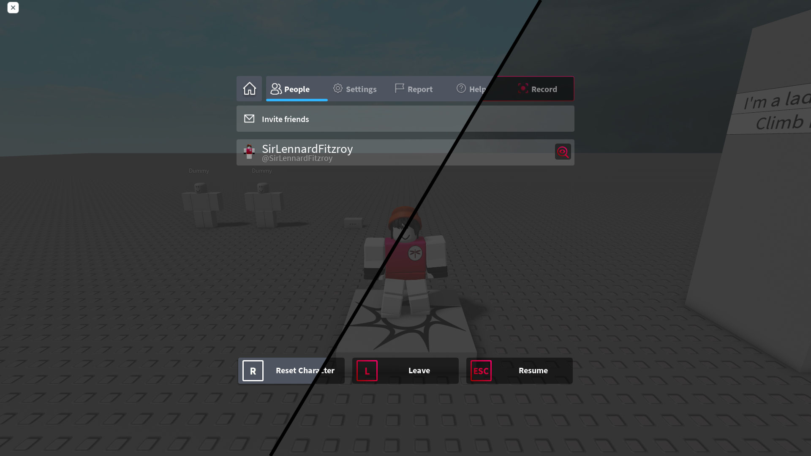
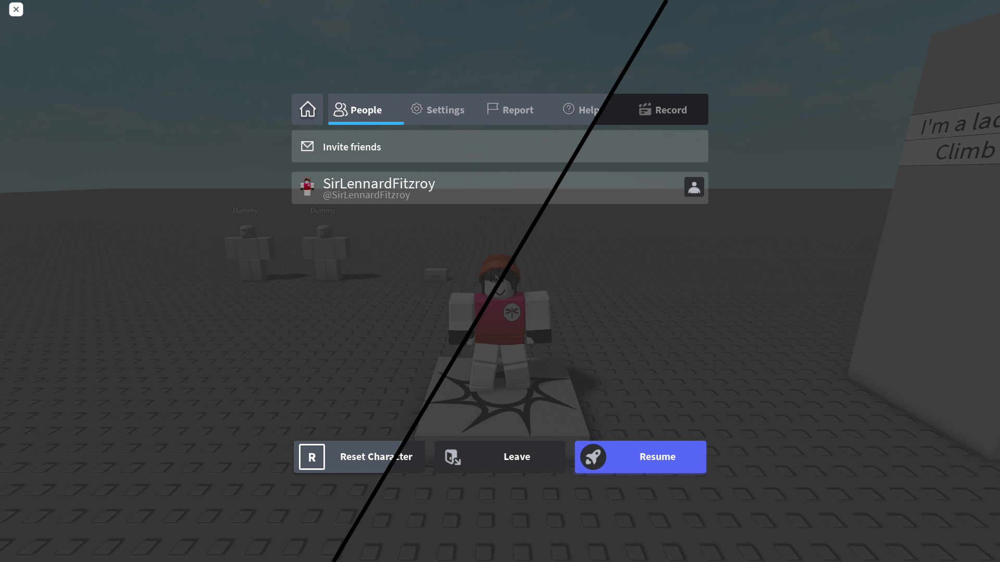

Quick access
Mods are a way to customize the appearance of your Roblox Player. They are quite limited in what you can change, but — if you know what you're doing — you can make it look awesome.
The most common mods are those that affect UI elements and character sounds, as showcased below.

V1 (2015) escape menu with (left) and without (right) Kliko's mod

V1 (2015) escape menu with (left) and without (right) Discord UI
You can find Roblox mods on sites like GameBanana,
in our Discord server or in servers for other programs that share the same functionality
(example: Bloxstrap).
The mods you've downloaded should be in the form of a .zip file. Follow these instructions to install them:
"%localappdata%\Kliko's modloader\Mods"
To verify that your downloaded mods will get applied correctly, please make sure that they follow the right format as stated below under 'Mod Formatting'.
Mods should be added to your mods folder with the following file structure:
Mod\content\sounds\ouch.ogg"
As of writing this, Kliko's modloader is only supported on Windows platforms, with no plans of adding support for macOS.
Because of this, users attempting to launch this program on an unsupported OS will receive this error message.
This error occurs when required config files could not be found.
Reinstalling the program should fix this issue.
This error message is shown when a newer version of Kliko's modloader is available, the url to the latest release will automatically be openede in your default browser.
If, for any reason, you do not want to update, there are two ways to bypass this error.
Temporary solution
Open 'File Explorer' and go to"%localappdata%\Kliko's modloader\Program Files\config", open the file named version.json.
"version" to that of the latest version,
this will prevent the exception from happening until another update is released.
Permanent solution
Open 'File Explorer' and go to"%localappdata%\Kliko's modloader\Program Files\modules\utils", open the file named startup.py.
This error occurs when the user refuses to update to a newer Roblox version
This happens when the user tries to launch Kliko's modloader with invalid launch arguments.
If you receive this error message, it means that I have accidentally released an incomplete version of Kliko's modloader, please join the discord server to report this issue.
Unexpected errors are any errors not listed above.
To get more information on why you received this error message, please read the latest log file in "%localappdata%\Kliko's modloader\Logs".
If you need any assistance, you are welcome to join our support server and let us know.